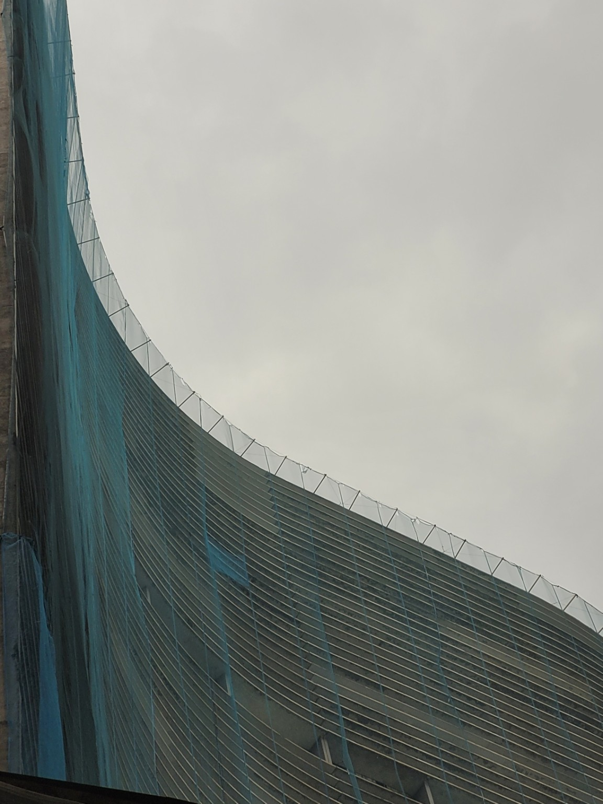

Projeto Tirésias.
Inspeção de Vagões — uma ferramenta nascida da experiência.

Uma ferramenta nascida da experiência.
A inspeção de vagões ferroviários exige observar as condições de cada compartimento, identificar irregularidades e registrar informações que acompanham diferentes etapas do trabalho.
Foi a partir da experiência direta com essa rotina que surgiu o Inspeção de Vagões (Projeto Tirésias): um aplicativo Android concebido para reunir, em uma única interface, registros que antes dependiam de procedimentos e controles separados.
O projeto organiza a vistoria, as evidências fotográficas e os pareceres, além de acompanhar lacres, carregamentos, ocorrências, relatórios e a continuidade do trabalho entre inspetores.
O problema que deu origem ao projeto.
A rotina de inspeção ferroviária envolve diferentes etapas, registros e decisões que precisam permanecer associados a cada vagão.
Durante minha experiência com essa atividade, percebi que a organização dessas informações dependia frequentemente de métodos individuais, da memória e de controles paralelos. Eram soluções que permitiam realizar o trabalho, mas também tornavam o processo mais complexo e suscetível a falhas.
Foi desse incômodo que nasceu o Tirésias: da vontade de transformar uma rotina fragmentada em uma experiência mais organizada, clara e confiável.
Da vistoria ao relatório.
O aplicativo acompanha a atividade por meio de listas, fichas individuais e registros de turno. Cada etapa preserva sua relação com o vagão correspondente, sem exigir que a organização dependa apenas da memória de quem executa o trabalho.
Indicadores e listas resumem a situação dos vagões e as etapas já concluídas.
A ficha reúne fotos, checklist, parecer, lacres e etapas do carregamento no registro de cada vagão.
O histórico reúne interrupções, ocorrências e relatórios. Registros selecionados podem ser transferidos entre aparelhos próximos, mesmo sem internet.
Sobre as imagens: capturas autênticas da interface do aplicativo, preparadas com vagões e registros demonstrativos. Fotografias operacionais não são exibidas; datas, horários e localização foram ocultados nas capturas destinadas a esta página.
Quando o uso transforma o projeto.
O Tirésias começou como resposta a uma dificuldade que também era minha. Ao longo do desenvolvimento, passou a incorporar demandas de outras pessoas e aspectos mais amplos da rotina de inspeção.
Algumas mudanças surgiram de observações aparentemente pequenas. Ao perceber a criação de diversas listas com apenas um vagão, ficou claro que a organização e a navegação precisavam ser repensadas.
Outra decisão envolveu a passagem de turno: a transferência de registros, inicialmente pensada por meio de arquivos compactados, evoluiu para a comunicação direta entre aparelhos próximos. O objetivo continuou o mesmo, mas a experiência se tornou mais simples.
Entre experiência e tecnologia.
A inteligência artificial ampliou minhas possibilidades de implementação técnica. Mas o caminho do projeto foi orientado pelas situações que eu conhecia, pelas dificuldades percebidas no uso e pelas perguntas que surgiam a cada nova versão.
Essa colaboração reforçou uma ideia que atravessa meu trabalho: criar não se resume a executar uma solução. Também significa reconhecer um problema, interpretar necessidades e decidir o que vale a pena construir.
O que existe e o que ainda imagino.
Hoje, o Tirésias organiza registros de inspeção e o acompanhamento dos vagões dentro de uma rotina de trabalho. Sua contribuição está em diminuir a dependência de controles paralelos e oferecer uma visão mais clara das informações já registradas.
Imagino, para o futuro, uma possibilidade mais abrangente: conectar informações ao longo de uma cadeia logística e contribuir para a rastreabilidade dos produtos. Essa visão ainda é uma ambição do projeto, não uma funcionalidade implementada.
Entre a ferramenta que existe e aquela que ainda pode existir, permanece o mesmo impulso: observar o que está disperso e procurar uma maneira de lhe dar sentido.